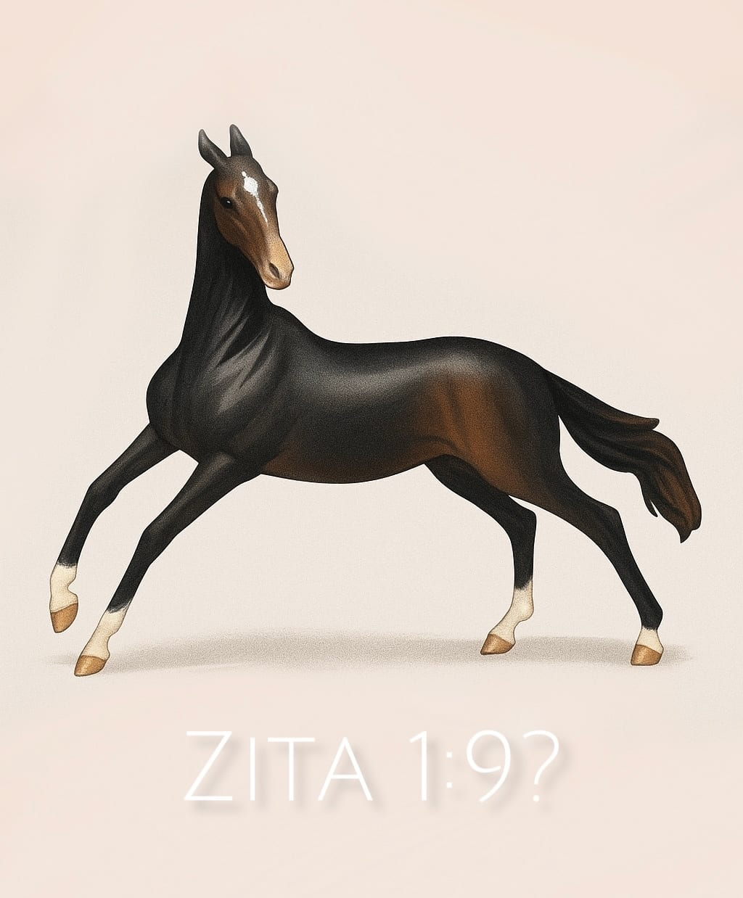
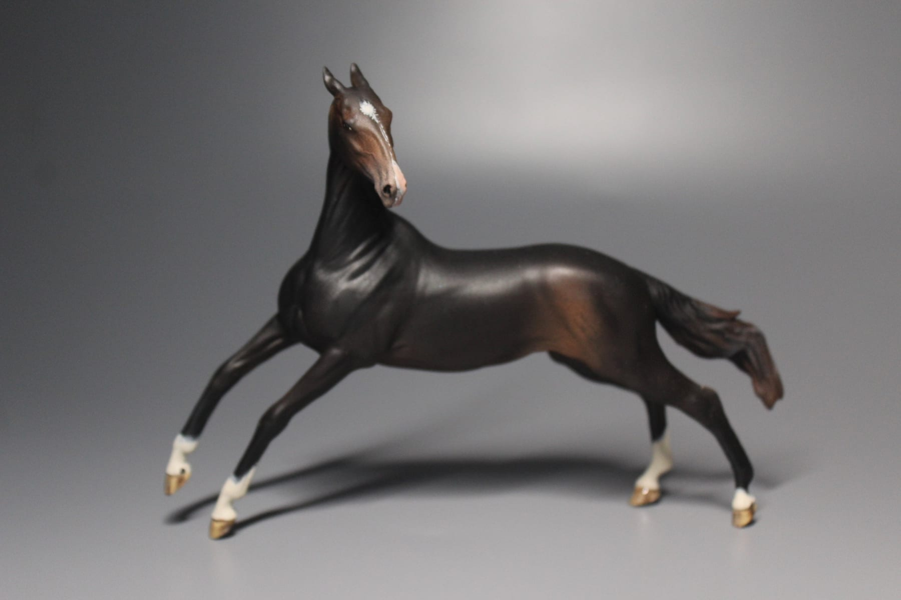
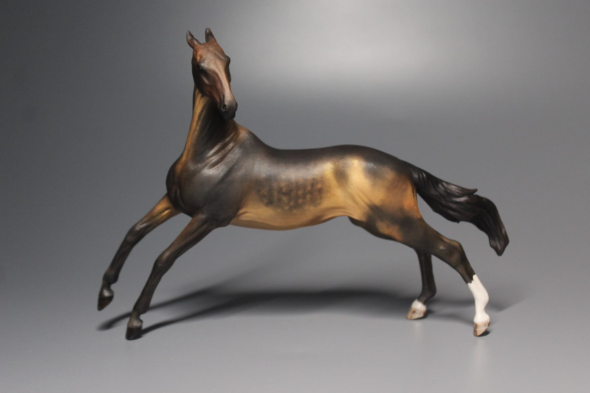

Авторский перекрас конных миниатюр
Модель, у которой есть характер
Я художник в мире конной миниатюры. Каждая лошадь здесь — полностью ручная работа, с проработанной мастью, отметинами и собственной историей.
- Десятки лошадей
- уже нашли своих владельцев
- Ручная работа
- от разбора до финального лака
- По всему миру
- модели уезжают на разные континенты
Работы
Каждая модель существует в одном экземпляре: повторить масть можно, но никогда не буквально — слои ложатся заново.
Зита — собственная модель
Зита была разработана мной, а скульптура появилась на свет благодаря команде Horsestation. Сначала появилось нарисованное превью, затем скульптура, а дальше — перекрасы: одна и та же Зита в разных мастях.



Студия перекраса
Масть собирается из четырёх решений — и ровно так же она собирается на модели: сначала основной тон, потом отметины, потом ноги, и только в конце становится понятно, что получилось.
Карточка скопирована
Кнопка скопирует карточку модели — останется вставить её в сообщение любым способом из контактов ниже.
Как это делается
Между заводской моделью и готовой лошадью — восемь этапов. Пропустить нельзя ни один: каждый следующий слой держится только на предыдущем.
Масти
Десять мастей, которые чаще всего просят. Наведите на любую — модель в студии выше переоденется.
Вопросы
Контакты
Пишите куда удобнее — читаю везде. В соцсетях лежат фотографии работ, в том числе те, что не попали на эту страницу.